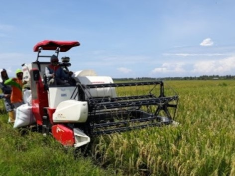
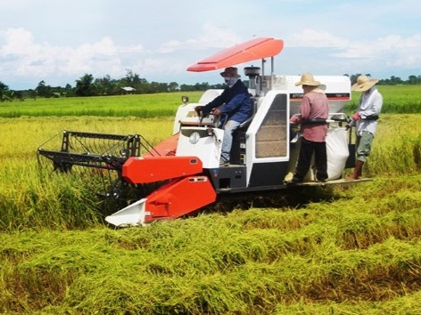

ARTIKEL
Tips Panen Padi Lebih Mudah Menggunakan Indo Combine Harvester
___
Permasalahan yang biasa dialami di bidang pertanian adalah terjadinya susut panen. Sebagian hasil tercecer saat tahap pemanenan, perontokan, pengeringan, maupun pengangkutan dan penggilingan. Kejadian tersebut tentu saja merugikan karena mengurangi hasil produksi beras. Sedangkan salah satu upaya untuk meningkatkan kesejahteraan petani dan swasembada beras adalah memaksimalkan hasil panen, maka kemajuan teknologi dalam bidang pertanian haruslah digencarkan. Selain mempermudah proses produksi, mesin pertanian modern turut mengatasi kelangkaan tenaga kerja serta meningkatkan kemandirian pangan.
Kementerian Pertanian (Kementan) siap menghadapi era industri 4.0 dengan mekanisasi pertanian. Salah satu yang menjadi andalan adalah alat mesin pertanian (Alsintan) Pemanen kombinasi (Indo Combine Harvester). Mesin ini memiliki kemampuan yang sangat canggih, yaitu dapat Memanen padi dalam satu proses secara bersamaan ; pemotongan, pengangkutan, perontokan, pembersihan, sortasi, dan pengantongan. Kehadiran alat pertanian modern seperti Indo Combine Harvester menjadi salah satu penunjang swasembada beras dapat terwujud. Hal tersebut seiring dengan konsep pertanian industrial yang salah satunya menerapkan sistem produksi berstandar “teknologi ilmiah tinggi”. Penekanan terhadap kecepatan dan kuantitas tidak semata-mata demi keuntungan saja, tetapi kestabilan dalam memperkuat ketahanan pangan. Oleh karena itu, dukung pertanian Indonesia dengan sistem yang lebih maju dan cepat, salah satunya adalah menggunakan mesin teknologi untuk optimalisasi produksi.
Spesifikasi Mesin Indo Combine Harvester
Berikut ini akan diuraikan spesifikasi dari mesin Indo Combine Harvester :
Tipe : Mini Combine, Riding Type Model : - Dimensi mesin Panjang : 4000 mm Dimensi mesin Lebar : 1650 mm Dimensi mesinTinggi : 1900 mm Total Berat : 1680 kg Motor penggerak Jenis : Single cylinder, direct injection Motor penggerak Daya : 17,15 (23) kW (HP) Motor penggerak Kecepatan Putaran motor penggerak : 2200 rpm Motor penggerak Jenis Bahan Bakar :Solar Motor penggerak Konsumsi BBM (max) : 2,37 liter/jam Motor penggerak Transmisi : 3 Maju, 1 Mundur Roda Type : Crawler Roda Jumlah : 2 unit Roda Panjang Bidang kontak : 1400 mm Roda Lebar Bidang kontak : 450 mm Unit Pengait Bentuk : Segi Lima Unit Pengait Diamater : 790 mm Unit Pengait Lebar : 1300 mm Unit Pengait Jumlah gigi pengait per baris : 14/14 buah/baris Unit Pengait Panjang : 290 mm Unit Pengait Diameter : 5 mm Unit Pengait Penyesuaian ketinggian : Sistem Hidrolis Unit Pengait Kecepatan Putar pengait : 25 rpm Unit Pemotong Bentuk pisau pemotong : Segi Lima Unit Pemotong Ukuran per mata pisau : - Unit Pemotong Panjang : 75 mm Unit Pemotong Lebar : 80 mm Unit Pemotong Tebal : 6 mm Unit Pemotong Jumlah mata pisau potong : 18 buahKeunggulan
- Gaya tekan mesin ke permukaan tanah (0,13 kg/cm2) sehingga memperkecil peluang terperosoknya mesin ke dalam tanah
- Lebar kerja 1,2 m sehingga cocok untuk petakan sawah yang sempit
- Efisiensi penggunaan tenaga kerja, hanya membutuhkan 3 orang per mesin panen
- Susut hasil panen 1,87%
- Tingkat kebersihan gabah 99,5%
Kesimpulannya, mesin Indo Combine Harvester ini sangat perlu diterapkan oleh seluruh petani di Indonesia di masa kini. Dengan tujuan untuk meningkatkan efisiensi dan keuntungan dari hasil panen.
___
Demikian uraian singkat mengenai Tips Panen Padi Lebih Mudah Menggunakan Indo Combine Harvester. Untuk lebih jelasnya, kalian dapat menonton Video Mempersingkat Panen dengan Indo Combine Harvester di bawah ini.
___